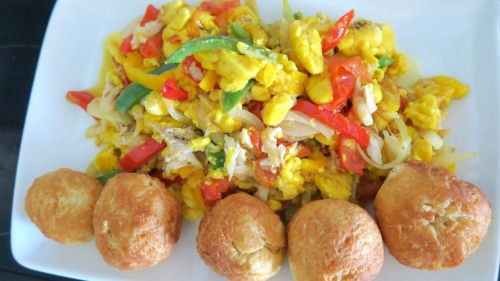

Ackee and Saltfish

The national dish of Jamaica and a beloved recipe by many.
Ingredients
- 1/2 pound boneless salt cod
- 1/2 cup vegetable oil
- Leaves from 1 sprig fresh thyme, chopped
- 2 onions chopped
- 4 scallions, chopped
- 1 cup chopped bell peppers, preferably assorted colors (green, red, yellow, orange)
- 1/2 Scotch bonnet chili, seeded and finely chopped
- One 540-gram can of ackee, drained
- 1 teaspoon finely ground black pepper
- 1 teaspoon Paprika
Steps
- Rinse the salt off the salt cod, and then soak it for 1 hour in hot water.
- Drain the salt cod and soak it for another hour in fresh hot water.
- Heat the oil in a skillet, add the garlic paste and sauté for 30 seconds.
- Add the thyme and sauté for 30 seconds more. Add the onions, scallions, bell peppers, and Scotch bonnet chili, reduce the heat and cook for 5 minutes.
- Drain the salt cod and flake it into the skillet. Cook for 5 minutes more, then add the ackee and cook for another 2 minutes.
- Add the black pepper, and then remove the skillet from the heat and sprinkle the paprika over the top of the ackee and salt fish.